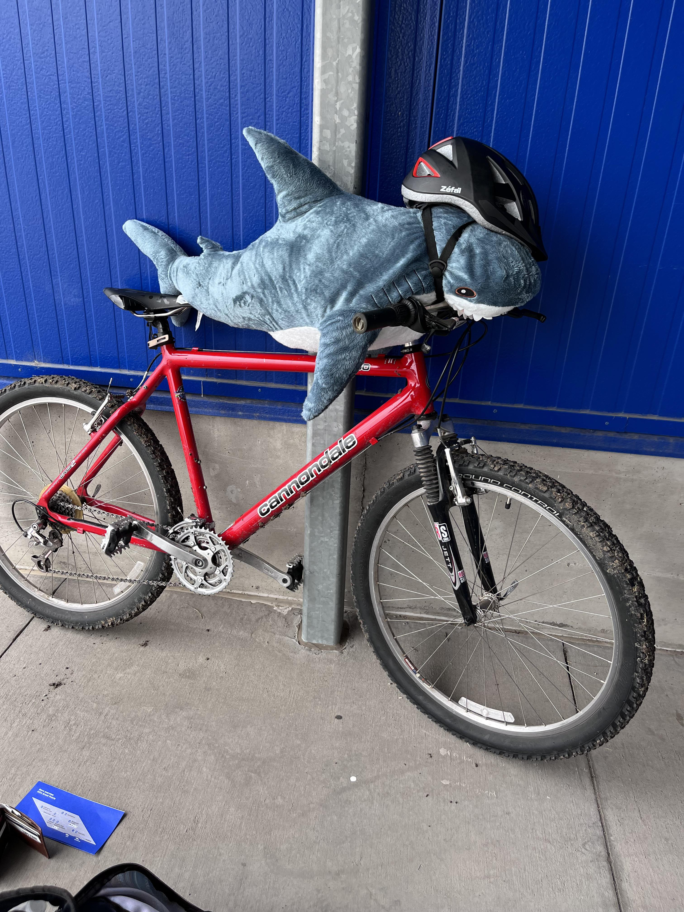
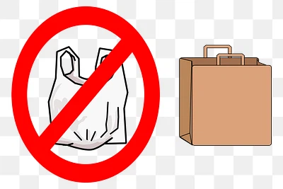
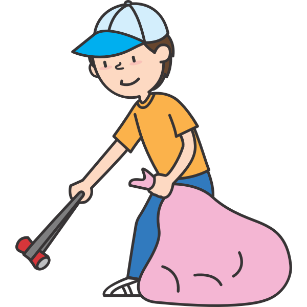
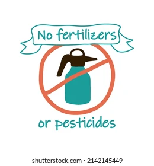

At the end of the day Haj is sharkie that loves his water and shark brothers and sisters. But with industrilization and levels of pollution present in our world he is scared about his future. He wants him and his fellow aquatic animals to live fulfilling lives that are long and healthy. You can aid him in this goal through your pursuits and actions!
All creatures deserve to have a safe, flourishing home.
Commuting or sharing rides with others is also another way to better your enviornmental footprint! Cars release a lot of pollutants which can eventually enter run-off and go into our bodies of water. To protect Blahaj we have to reduce this by using other means of transportation!

Plastic is a material that eventually ends up in our bodies of water. It is not biodegredable and hurts/kills many aquatic animals. It can get interwrapped in fins and can be mistaken as food. It is imperative we reduce the usage of plastic to protect our planet and the beautiful species present on Earth. This point can be met through simple means. Such as simply choosing to use a metal water bottle or utilizng paper/plastic bags several times before they're trashed. Truly anything you can do is useful and allows you to have a positive impact!

Trash eventually ends up in our bodies of water, hurting many aquatic creatures. By picking up trash in our communities or participating in beach clean-ups, you can help protect Blahaj and our oceans.

Fertilizers and pesticides can enter run-off eventually entering our water. This adds excess nutrients and pollutants to water, which can lead to the growth of algae, reducing the oxygen levels into water. This negativley impacts the creatures in the water. Try reducing your usage of fertilizers/pesticides or using more sustainable ones to meet this point :)!
